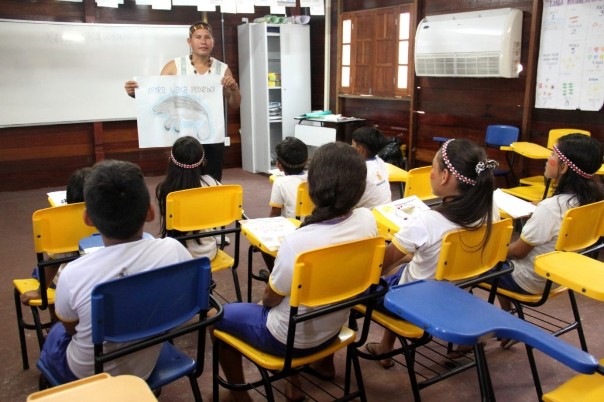

José Ricardo Costa Araújo;
Kauã Henrique Souza Ribeiro;
Pedro Henrique Vilela;
Vinícius Eduardo Dias
Inclusão & Acessibilidade
O conceito de inclusão: É a nossa capacidade de entender e reconhecer o outro e, assim, ter o privilégio de conviver e compartilhar com pessoas diferentes de nós. A educação inclusiva acolhe todas as pessoas, sem exceção. O conceito de Acessibilidade: a acessibilidade é condição de possibilidade para a transposição dos entraves que representam as barreiras para a efetiva participação de pessoas nos vários âmbitos da vida social.
Barreiras de acessibilidade
Analises Dos Aplicativos
Be my eyes
Be my eyes (seja meus olhos, traduzindo do inglês para o português) é um aplicativo simples, porém eficiente. O usuário com deficiência visual faz uma vídeo chamada para algum voluntario somente com o clique de um botão na tela. O voluntario, então, ajuda o usuário falando com ele pela vídeo chamada, falando coisas que estão na frente dele, respondendo duvidas como a cor da roupa que eles estão segurando, se a TV está ligada, etc.
Positivos
Negativos
Cittamobi Acessibilidade
É um aplicativo adaptado para cegos em que ele é especializado em transportes (Desde a pé até automóveis)
Positivos
Negativos
Guiaderodas
Guiaderodas é um aplicativo que visa informar aos usuários quais lugares são acessíveis, dividindo-os em 4 tipos: Totalmente acessível, parcialmente acessível, não acessível, e não avaliado. O aplicativo pega os lugares perto de você, e então, diz ao usuário o seu nível de acessibilidade.
Positivos
Negativos
Hand talk
O aplicativo usa uma IA (inteligência artificial) para converter o texto falado em libras, o que faz com que o app melhore com o tempo. O app conta com um pequeno tutorial no começo, que nos ensina a aumentar ou diminuir a velocidade do texto, e com a opção de dicionário
Positivos
Negativos
Transcrição estantânea
O aplicativo converte sons da vida real em textos, que podem ser lidos por pessoas que possuem deficiência auditiva parcial ou total.
Positivos
Negativos
Estatuto do idoso
Indígenas
Tópicos:
•Quem são ?
•FUNAI.
•Indígenas aculturado.
•Tribos não aculturado.
•Participação na política e na educação.
•Costumes indígenas que nos chocam(choque de culturas).
Quem são?
Os povos indígenas são grupos culturais e sociais que compartilham o mesmo laço ancestral com a terra e as fontes naturais de onde eles vivem. No Brasil, os indígenas eram os povos que habitavam o território antes mesmo da chegada dos colonizadores, por volta do século XV.

Funai
A Fundação Nacional do Índio (FUNAI) foi criada em 5 de dezembro de 1967.
As responsabilidades da FUNAI é a demarcação e a regularização das terras indígenas, além de monitorá-las e fiscalizá-las.
Atualmente existem 724 terras no Brasil
120 terras estão em processo de identificação e estudo pela FUNAI
44 já foram identificadas e aprovadas pela Fundação
73 foram declaradas terras indígenas pelo Ministério da Justiça
487 já foram homologadas pela Presidência ou doadas por terceiros
Indígenas aculturados
•Mudança de identidade cultural;
•Perda de língua e tradição;
•Assimilação a padrões sociais predominantes;
•Desconexões com a comunidade indígena de origem;
É importante ressaltar que a aculturação não é uma escolha feita pelos indígenas, mas muitas vezes é resultado de pressões externas, como colonização, assimilação forçada, perda de território e discriminação.
Indígenas não aculturados
São predominantemente chamadas de tribos isoladas, já que “não aculturadas” pode ser ofensivo, ou fazer as pessoas pensarem que são seres primitivos ou algo do tipo.
Eles possuem esses nomes por preferirem se isolar de pessoas não indígenas, o que os fez não abandonarem seus costumes, crenças, religiões, etc. Eles se utilizam de práticas como pesca, caça e agricultura para sobreviver.
Muitas dessas tribos vivem em áreas isoladas e de difícil acesso, e vivem longe da cultura ocidental tanto por escolha própria como por simplesmente terem difícil acesso a sociedade moderna.
Essas tribos que preferem se isolar por escolha própria fazem isso geralmente pelos acontecimentos passados da colonização, onde houveram genocídios de indígenas, e epidemias de doenças nos quais eles não tinham anticorpos.
De acordo com a FUNAI, de 114 registros de tribos indígenas isoladas, apenas 28 são confirmadas (2022).
Participação na Política
O maior interesse dos povos indígenas na politica institucional se deve à necessidade de sua representatividade e à defesa de seus direitos nos ambientes de decisão
Participação na Educação
A Educação Escolar Indígena ocorre em unidades educacionais inscritas em suas terras e culturas, as quais têm uma realidade singular, requerendo pedagogia própria em respeito à especificidade étnico-cultural de cada povo ou comunidade e formação específica de seu quadro docente
Costumes indígenas que nos chocam
•Pintura corporal e adornos;
•Modos de vestimenta;
•Rituais espirituais;
•Conexão com a natureza;
•Estruturas sociais;
•Poligamia.
Entendo que os trajes tradicionais indígenas podem ser diferentes dos costumes ocidentais e, às vezes, podem causar choques culturais devido à diversidade cultural. É importante lembrar que a diversidade é uma parte fundamental da nossa humanidade e que o respeito pelas diferentes culturas é essencial. O que pode parecer chocante em um contexto cultural pode ser profundamente significativo em outro.